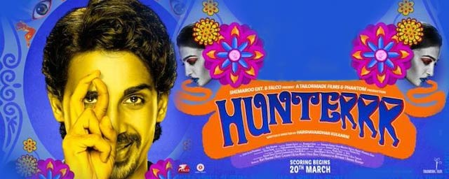

The story of ''Cinderella'' follows the fortunes of young Ella (Lily James) whose merchant father remarries following the death of her mother. Eager to support her loving father, Ella welcomes her new stepmother (Cate Blanchett) and her daughters Anastasia (Holliday Grainger) and Drisella (Sophie McShera) into the family home. But, when Ella's father unexpectedly passes away, she finds herself at the mercy of a jealous and cruel new family. Finally relegated to nothing more than a servant girl covered in ashes, and spitefully renamed Cinderella, Ella could easily begin to lose hope. Yet, despite the cruelty inflicted upon her, Ella is determined to honor her mother's dying words and to ''have courage and be kind''. She will not give in to despair nor despise those who mistreat her.
Cindrella43%
This film is a sequel to the 2004 hit crime and underworld film, Ab Tak Chhappan. To curb crime that has been increasing under the influence and control of the underworld Don, Rawale (operating from Bangkok) and Don, Rauf Lala (operating from Mumbai), the Home Minister and the Chief Minister need a capable officer who can take charge of the Mumbai Encounter Squad.
Sadhu Agashe (Nana Patekar), who was once holding the position and is currently facing several charges is the first choice. After several calls, the man has finally agreed to re-join the police force. And the action begins...
Ab Tak Chapan 254%
Two people come together, but their differences force them apart.

Shamitabh 45%
You Too Brutus revolves around two brothers who drift apart following a clash. The film follows them both, chronicling the incidents in their lives with a dash of humour. Hari, played by Sreenivasan, is a successful artist who looks down on others. When Abhi, his younger brother, leaves their home he accommodates a couple of youngsters which leads to a string of funny incidents.

You Too Brutus 14%
I is a fantasy adventure directed by Shankar. The film has Vikram playing a body builder preparing for the Mr Tamil Nadu contest. During his preparation, some kind of power is pumped into his body and he transforms into a beast.

I 70%
Former cinema superhero Riggan Thomson (Michael Keaton) is mounting an ambitious Broadway production that he hopes will breathe new life into his stagnant career. It's risky, but he hopes that his creative gamble will prove that he's a real artist and not just a washed-up movie star. As opening night approaches, a castmate is injured, forcing Riggan to hire an actor (Edward Norton) who is guaranteed to shake things up. Meanwhile, Riggan must deal with his girlfriend, daughter and ex-wife.
Birdman 80%
Based upon the acclaimed comic book and directed by Matthew Vaughn, Kingsman: The Secret Service tells the story of a super-secret spy organization that recruits an unrefined but promising street kid into the agency's ultra-competitive training program just as a global threat emerges from a twisted tech genius.
Kingsman the Secret Service86%
Kakki Sattai is touted as an action comedy entertainer with all the commercial elements. This is the second time that Sivakarthikeyan has teamed up with director Durai Senthil Kumar after the stupendous success of Ethir Neechal. The actor will be seen portraying the role of a police officer for the first time.
KaakiSattai 10%
An introverted girl grows up to be a self-made woman.

Mili 28%
Preview 1
From the heart of North Malabar comes a fun filled self portrayal of today's generation! The lead character has a dream to make a film and plans to meet Tamil movie director Gautham Menon and then later superstar Ajith to fulfil his dream.
His best friend suggests they make a short film and they together decide the story of the movie to be a copy of Korean movie. Soon they head to Chennai. The story narrates their journey to Chennai and their obsession in taking selfies on the way.

Oru Vadakkan Selfie65%
With our time on Earth coming to an end, a team of explorers undertakes the most important mission in human history: traveling beyond this galaxy to discover whether mankind has a future among the stars

Interstellar54%
Mohanlal plays Vineeth Pillai, a bored scribe who has been working for a family magazine for the past twenty years. Kalyani, the new editor-in-chief, decides to revamp the whole system and get rid of the old staff. In order to make life difficult for Vineeth and get him to quit, he is assigned with the tough task of interviewing Deepa, an advocate-cum-activist. She evades all his attempts and the film chronicles how he goes about accomplishing the challenge.

Ennum Eppozhum45%
A couple's road trip goes awry but the woman, stacked against all odds, manages to not just stick it out but indeed give it back.Meera and Arjun are professionals living in Gurgaon. When Meera walks out of a party late one night, she gets attacked by a group of unknown men. Although she escapes through the skin of her teeth, it leaves her traumatised. Arjun, partly blaming himself for not being there that night, tries to make up for it by treating her to a luxurious desert holiday. As they stop on a Highway dhaba for dinner, they witness a young girl being picked up by a bunch of hoodlums. Arjun chooses to step in, unmindful of the danger ahead.
NH10 14%
Dum Laga Ke Haisha revolves around the life of a small town couple - Prem and Sandhya. From overcoming his fear of the English language to dealing with an overbearing father, Prem (Ayushmann Khurrana) discovers that his oversized and mismatched wife, Sandhya (Bhumi Pednekar), who he thought was a spanner in his business and life, will actually lead him to something quite cool.
Dum Laga Ke Haisha70%
Every child comes into the world full of promise, and none more so than Chappie: he is gifted, special, a prodigy. Like any child, Chappie will come under the influence of his surroundings - some good, some bad - and he will rely on his heart and soul to find his way in the world and become his own man. But there's one thing that makes Chappie different from anyone else: he is a robot. The first robot with the ability to think and feel for himself. His life, his story, will change the way the world looks at robots and humans forever
Chappie80%
Badlapur is a dark crime drama with an interesting game of taking action and responsibility, of being able to and not being able to forgive and make sacrifices.
The film delivers a top-notch thriller, which shows how a happy man's life changes into an unstable emotional state, and the twist becomes a part of the formula.

Badlapur 35%
Yennai Arindhaal captures the various stages in the life of police officer Sathyadev. A dedicated Sathya puts his work before anything else and continues to risk his life to fight anti-social behaviour thereby making his city a safer place to live in.
But above all, Sathya takes upon himself to find the culprit who murdered his fiancee. His journey takes him around the world where a series of action sequences and high adrenaline situations arises culminating into a surprising climax.

Yennai Arindhaal10%
The story is about a freelance writer for a daily based in Bangalore, who lives with his close friend. On a rainy night, he meets a girl who is enjoying her life after studies. Gradually their friendship turns into love and the events that follow form the rest of the story.
100 Days Of Love 28%
Preview 2
Will Smith stars as Nicky, a seasoned master of misdirection who becomes romantically involved with novice con artist Jess (Margot Robbie). As he's teaching her the tricks of the trade, she gets too close for comfort and he abruptly breaks it off. Three years later, the former flame - now an accomplished femme fatale - shows up in Buenos Aires in the middle of the high stakes race-car circuit. In the midst of Nicky's latest, very dangerous scheme, she throws his plans for a loop, and the consummate con man off his game.

Focus34%
In a contemporary interpretation of war-torn Calcutta during the 1940s, the film follows the first adventure of Byomkesh, fresh out of college, as he pits himself against an evil genius who is out to destroy the world. It is his wits against the most villainous arch criminal the world has seen, in a world of murder, international political intrigue and seduction.

Detective Byomkesh Bakshy82%
Komban, a story set in Ramanathapuram district, is about Kombaiah Pandian, a butcher played by Karthi, and his relationship with his father-in-law, played by Rajkiran.

Komban36%
Hunterrr is a coming of age story of a man who is obsessed with sex, and all his life has been chasing skirts. Until he falls in love. Hunterrr stars Gulshan Devaiah in the lead role.

Hunterr 63%
After defeating Owen Shaw and his crew, Dominic Toretto (Vin Diesel) and his crew are able to return to the United States and live the normal life again as they had wanted, but Owen's older brother, Ian Shaw (Jason Statham), is after Dominic, seeking revenge for the death of his brother, putting the entire crew in danger once more. After learning of Han's death, the crew sets out to find the man who killed one of their own, before he finds them first.
Fast and Furious 760%
Surya vs Surya is a romantic film, about a young man who suffers from a rare genetic disorder. Due to this, he cannot go out in the sunlight as it can be fatal to him. The film shows how he manages to win the heart of his soulmate, while fighting against all odds.
Surya vs Surya30%
Jil is an action packed movie where Gopichand plays the role of a fireman. Rashi Khanna plays his love interest in the film.
Jil 65%
Nanbenda is a romantic comedy which narrates the story of how a happy-go-lucky boy falls for a girl whom he meets during a visit to his friend's house. However, It is not an out-and-out comedy and also has its share of suspense and action.
Nanbenda45%
It is the storry of a man who returns to his village to claim his ancestral land. Along the way, he meets and befriends a charming young woman. Her family welcome him, before realizing he is a descendant of their sworn enemy from a long-standing family feud. The family's strict rules of hospitality require them to treat him well while he remains under their roof, but they plan to kill him the moment he steps out of their door.
Ivan Maryadharaman 58%